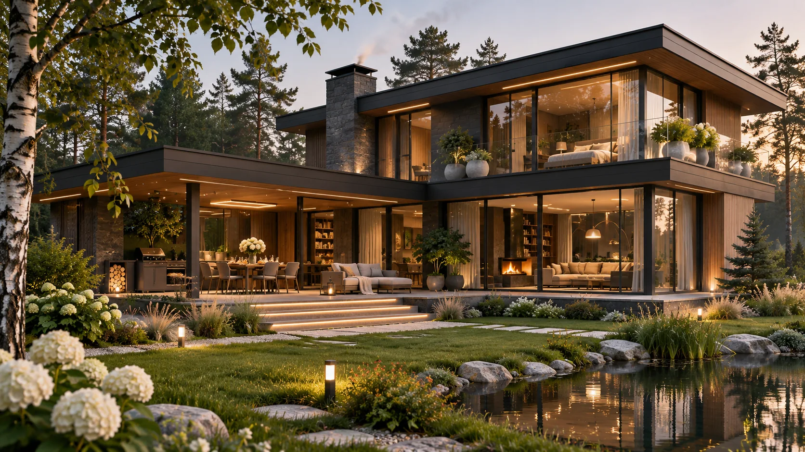
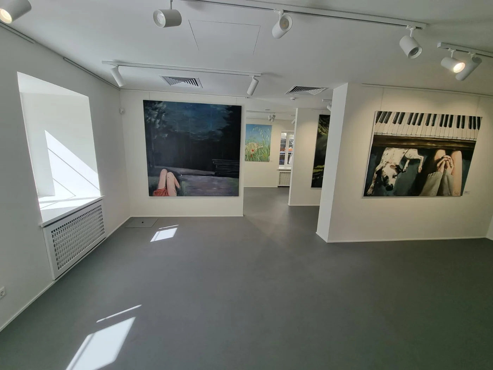
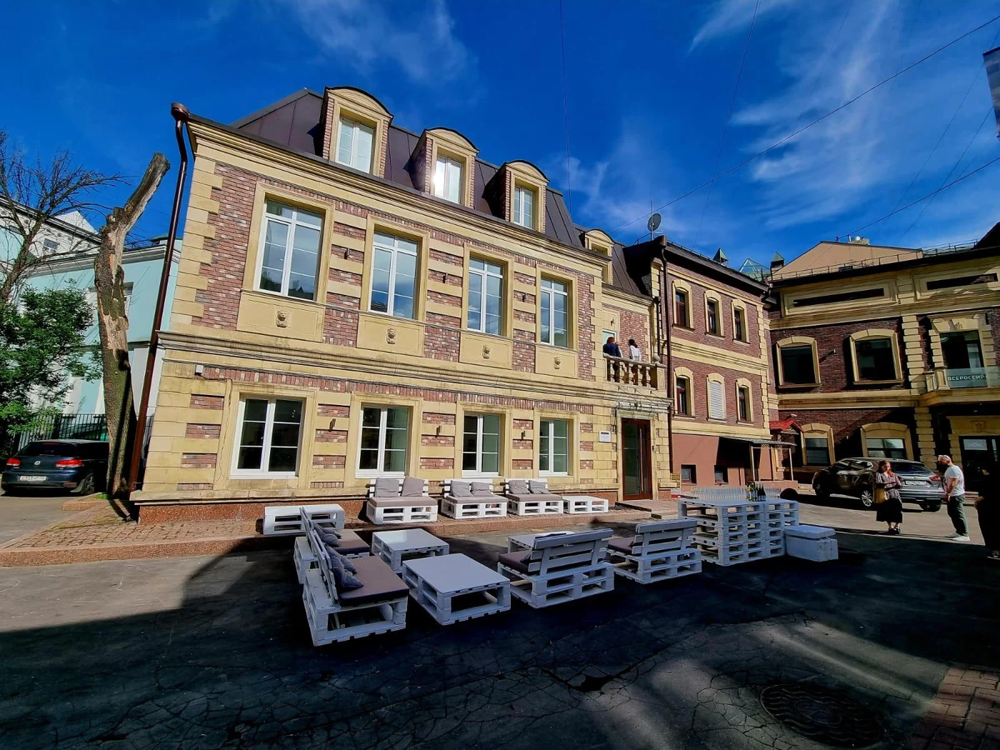

СТРОИТЕЛЬСТВО · ИНЖЕНЕРИЯ · ПАРТНЁРСТВО
Сильные проекты
строятся вместе.
МосПромСтрой — строительный консорциум. Объединяем компетенции компаний для реализации частных, коммерческих и промышленных объектов.
Архитектурная концепция
О КОНСОРЦИУМЕ
Разные компетенции.
Единая задача.
Крупный проект требует архитекторов, инженеров, строителей, производителей и подрядчиков. Мы развиваем сотрудничество компаний, чтобы формировать команду под задачи заказчика.
Как устроена работа консорциумаЧЕМ МЫ ЗАНИМАЕМСЯ
Направления работы
От индивидуального дома до производственного объекта — выбирайте профиль проекта.
 01 / СТРОИТЕЛЬСТВОБыстровозводимые зданияСкладские, производственные и коммерческие корпуса
01 / СТРОИТЕЛЬСТВОБыстровозводимые зданияСкладские, производственные и коммерческие корпуса
 02 / ИНЖЕНЕРИЯ3D-сканированиеТерритории, здания и цифровые модели
02 / ИНЖЕНЕРИЯ3D-сканированиеТерритории, здания и цифровые модели
 03 / МАТЕРИАЛЫИзготовление и поставка бетонаСостав, объём и условия — по запросу
03 / МАТЕРИАЛЫИзготовление и поставка бетонаСостав, объём и условия — по запросу

04 / ЧАСТНАЯ АРХИТЕКТУРАДом твоей мечтыПроектирование и строительство домов под ключ 05 / ПОДГОТОВКА ПЛОЩАДКИДемонтаж сооруженийОбследование, подготовка и организация работ
05 / ПОДГОТОВКА ПЛОЩАДКИДемонтаж сооруженийОбследование, подготовка и организация работ
 06 / ДИЗАЙНДизайн помещенийЧастные и коммерческие пространства
06 / ДИЗАЙНДизайн помещенийЧастные и коммерческие пространства

07 / ПРЕЗЕНТАЦИЯАрхитектурные 3D-макетыПредставление проектов и территорий
08 / КОММЕРЧЕСКИЕ ОБЪЕКТЫПромышленное строительство и генподрядОбъекты для бизнеса и производственных задач АРХИТЕКТУРНАЯ КОНЦЕПЦИЯ
АРХИТЕКТУРНАЯ КОНЦЕПЦИЯАРХИТЕКТУРА И СРЕДА
Пространства, которые хочется создавать.
Индивидуальная архитектура, продуманная инженерия и внимание к жизни людей — от первого замысла до обсуждения реализации.
Исследовать «Дом твоей мечты» ↗СОТРУДНИЧЕСТВО
С чего начинается проект
Простой маршрут от первого разговора к согласованному формату работы.
Обсуждаем задачу
Тип объекта, площадка, регион, масштаб и ожидаемый результат.
Определяем компетенции
Выясняем, какие специалисты, компании и ресурсы необходимы.
Согласуем формат
Участники, объём работ, ответственность и следующие действия.
СЛЕДУЮЩИЙ ШАГ
Начнём с вашей задачи.
Расскажите, какой объект вы планируете. Мы обсудим масштаб, сроки и возможный формат сотрудничества.